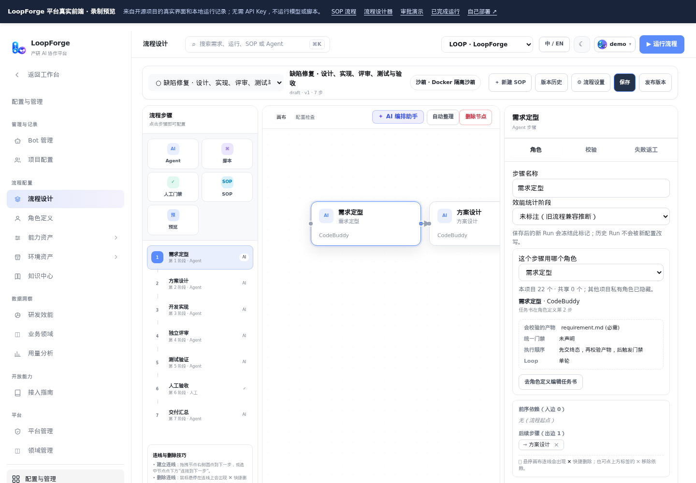

把方法沉淀为 SOP
连接 Agent、脚本、人工审批和子流程。内置后端、前端、缺陷修复与产品方案模板，可按项目调整。
开源 · 自主部署 · Agent 软件交付平台
把编程 Agent、脚本和人工审批编排成可复用的 SOP。
从方案、实现到评审、测试和验收，每个环节都有分工和证据。
真实平台前端 · 录制数据预览 · 无需登录或 API Key

一条需求，一套可复用的交付方法
连接 Agent、脚本、人工审批和子流程。内置后端、前端、缺陷修复与产品方案模板，可按项目调整。
为不同角色配置独立指令、执行器和工具。支持 CodeBuddy、Codex 和 Claude Code，不替代已有 Coding Agent。
运行状态、日志和产物集中留存。关键节点由人确认，不满意可打回指定环节返工。
真实平台 · 真实脚本与审批录屏
网页预览使用开源项目真实前端与独立实例录制数据，不执行模型或用户代码。真实 Agent 任务需自部署并配置执行器凭据。
MIT 开源 · 运行在你自己的环境
准备 Docker（含 Compose）和 Python 3，启动后打开 localhost:8090。首页引导可带你跑通无需模型 Key 的脚本与审批示例。
git clone https://github.com/Tencent/LoopForge.git
cd LoopForge
bash scripts/install.sh默认面向可信团队，仅监听本机。对公网开放前，请阅读项目中的账号、权限与 Docker 沙箱部署边界。